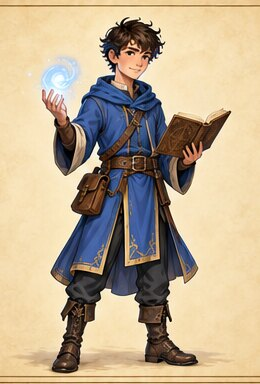
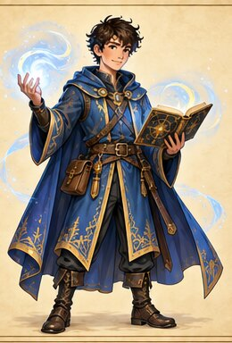
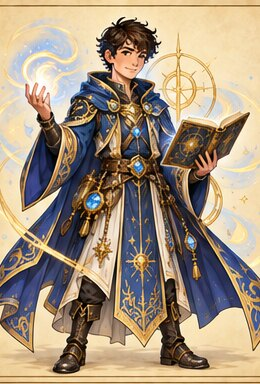

⌨ Escribir
Construí y ejecutá una solución. El checklist muestra los requisitos.
Todo lo que necesitás para avanzar por cualquier universo del código. Consultalo cuando una misión, técnica o experimento se complique.
Ñ y tildes: podés usarlas en textos y comentarios. Para compatibilidad, evitá esos caracteres en variables y funciones: dano, danio, energia.
Construí y ejecutá una solución. El checklist muestra los requisitos.
Terminá un fragmento sin perder su intención.
Usá arrastre, botones o teclado; después ejecutá.
Seguí los valores antes de elegir la salida.
La lista se genera desde las consignas del juego e incluye los 39 desafíos, objetivos, modalidad, pasos y código inicial.
Cargando mapa…
nombre = input("Nombre: ")
nivel = int(input("Nivel: "))
print(nombre, nivel)vida = 35
if vida > 0:
print("Continúa")
else:
print("Debe descansar")turnos = 3
while turnos > 0:
print(turnos)
turnos = turnos - 1mochila = ["mapa", "llave"]
mochila.append("poción")
for objeto in mochila:
print(objeto)def curar(vida, puntos):
return vida + puntos
print(curar(40, 10))import random
try:
caras = int(input("Caras: "))
print(random.randint(1, caras))
except ValueError:
print("Escribí un número")En un while, alguna variable de la condición debe cambiar.
Si no aparece el coloreado, el editor sencillo permite continuar.
El editor y Skulpt están incluidos localmente. Si el navegador no admite alguna función, se activa el respaldo para ejercicios básicos.
Pip lee la misión abierta y el editor. Podés escribir: “No entiendo la consigna”, “¿por dónde empiezo?”, “revisá mi código”, “explicame la línea 3”, “¿qué salida produce?”, “guiame paso a paso” u “otra pista”.
Tu clase conserva la misma identidad, pero su equipo y sus movimientos evolucionan al demostrar dominio: etapa inicial durante las primeras 12 misiones, veterana desde la misión 13 y legendaria desde la 26. Entre esas transformaciones existen doce mejoras menores, aproximadamente una cada tres misiones.



Al final del juego aparece un recorrido con una posición por misión. Tu personaje camina solamente cuando superás un nuevo desafío, conserva su lugar al volver y atraviesa los hitos Veterano, Legendario y Dragón. En un tema de CREA, la ruta muestra el avance de ese bloque.
El menú ♿ permite aumentar texto, activar contraste alto, cambiar tipografía y reducir animaciones. Los bloques no dependen exclusivamente del arrastre.
En ?tema=... se muestra solamente el tema elegido. En ?vista=pip el chat ocupa el iframe como herramienta independiente.
Desde la versión 1.8 podés recorrer el mismo curso con distintas ambientaciones. Calabozos & Python es la campaña original y Academia Arcana & Python es una campaña original de hechicería contemporánea. Cambiar la ambientación no borra tu progreso.
La apariencia puede cambiar desde Ajustes. Los ejercicios, las validaciones de Python y los objetivos de aprendizaje son los mismos.